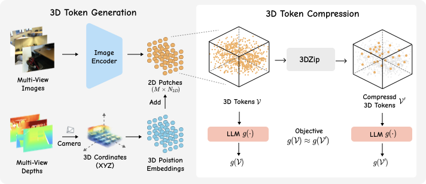
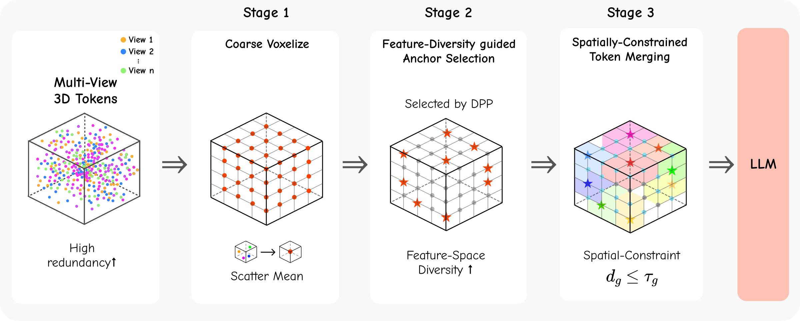
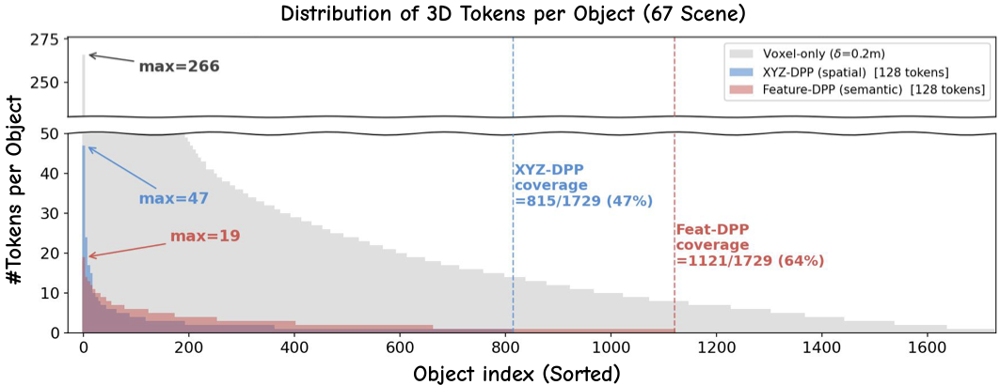
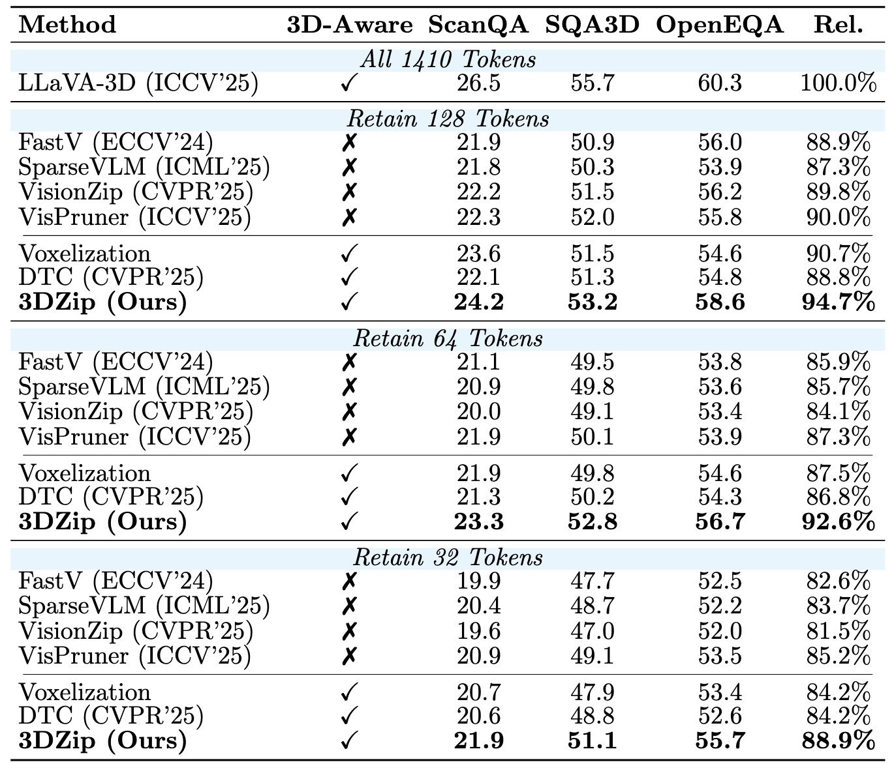

Qualitative Results
Retained 3D tokens produced by 3DZip across different indoor scenes — switch datasets below.


Recent 3D vision-language models (3D VLMs) construct geometry-aware tokens by projecting 2D visual features into world coordinates, enabling spatial reasoning for tasks such as 3D question answering. However, this design generates thousands of tokens per scene, resulting in substantial computational and memory overhead. While token compression has been extensively studied in 2D VLMs, existing approaches rely on semantic relevance or attention-based selection that overlook the structured spatial nature of 3D tokens. Moreover, redundancy in 3D representations cannot be resolved by spatial proximity alone, as object-level token imbalance persists even after spatial aggregation. To address this, we propose 3DZip, a three-stage token compression framework that first applies coarse voxelization to remove point-level redundancy, then selects anchor tokens based on feature-space diversity via a Determinantal Point Process, and finally merges remaining tokens under spatial constraints to preserve geometric coherence. Experiments on three 3D question answering benchmarks demonstrate that 3DZip consistently outperforms existing compression methods, retaining 94.7% of the original performance with only 128 tokens, achieving a 1.92× faster inference speed.

Geometry-aware 3D token construction. Multi-view RGB-D inputs are projected into world coordinates to form geometry-aware 3D tokens via 3D positional embedding. The large token cardinality N = M × N2D motivates an efficient token compression strategy.

Overview of the proposed three-stage token compression pipeline. Given geometry-aware 3D tokens 𝒱, we first apply coarse voxelization to obtain a spatially reduced set, then perform diversity-aware anchor selection via a Determinantal Point Process to identify semantically representative anchors, and finally spatially-constrained token merging aggregates nearby non-anchor tokens into anchors to produce the compressed set.
Projection-based multi-view aggregation introduces two distinct forms of redundancy. Point-level redundancy arises when identical physical surfaces are observed across multiple viewpoints, producing overlapping tokens at nearly identical locations. Object-level redundancy occurs when a single object is represented by tokens from multiple surface regions, which spatial aggregation alone cannot collapse. 3DZip explicitly decomposes redundancy into point-level density, object-level duplication, and geometric consistency, and addresses each with a dedicated stage.

Object-level token allocation across selection strategies on the full SQA3D test scenes. Per-object token counts for 1,729 foreground object instances across 67 ScanNet scenes. The voxel-only distribution exhibits a pronounced long-tail pattern; spatial sampling (XYZ-DPP) still concentrates on a limited subset of objects (47% coverage), whereas Feature-DPP distributes tokens more evenly, improving object coverage to 64%.

Main results on three 3D question answering benchmarks (ScanQA, SQA3D, OpenEQA). Under matched token budgets (128 / 64 / 32 tokens), 3DZip consistently outperforms prior 2D token compression methods. With only 128 tokens, 3DZip retains 94.7% of the full-token (1410) performance.
3DZip is applied after 3D token construction without modifying the backbone, and consistently outperforms all baselines on Video-3D-LLM and SR-3D under every token budget.
Video-3D-LLM (CVPR'25)
| Method | ScanQA | SQA3D | OpenEQA |
|---|---|---|---|
| All 3920 Tokens | |||
| Video-3D-LLM | 29.9 | 58.4 | 59.4 |
| Retain 128 Tokens | |||
| VisPruner | 23.6 | 51.2 | 53.5 |
| Voxelization | 24.6 | 52.2 | 52.9 |
| DTC | 23.7 | 51.9 | 53.5 |
| 3DZip (Ours) | 24.7 | 53.1 | 54.6 |
| Retain 64 Tokens | |||
| VisPruner | 22.3 | 49.2 | 51.4 |
| Voxelization | 22.7 | 50.0 | 51.9 |
| DTC | 22.5 | 49.2 | 52.0 |
| 3DZip (Ours) | 23.8 | 52.2 | 54.6 |
| Retain 32 Tokens | |||
| VisPruner | 21.0 | 48.4 | 50.2 |
| Voxelization | 20.9 | 48.3 | 50.3 |
| DTC | 20.8 | 49.0 | 50.0 |
| 3DZip (Ours) | 23.3 | 51.8 | 53.0 |
SR-3D (ICLR'26)
| Method | ScanQA | SQA3D | OpenEQA |
|---|---|---|---|
| All 2420 Tokens | |||
| SR-3D | 29.6 | 61.0 | 61.7 |
| Retain 128 Tokens | |||
| VisPruner | 23.0 | 51.5 | 54.3 |
| Voxelization | 22.8 | 51.1 | 52.2 |
| DTC | 23.5 | 51.4 | 53.5 |
| 3DZip (Ours) | 24.2 | 53.2 | 54.5 |
| Retain 64 Tokens | |||
| VisPruner | 21.9 | 50.3 | 52.0 |
| Voxelization | 21.1 | 48.8 | 49.6 |
| DTC | 21.1 | 49.6 | 52.0 |
| 3DZip (Ours) | 23.1 | 51.9 | 52.6 |
| Retain 32 Tokens | |||
| VisPruner | 20.1 | 49.1 | 51.5 |
| Voxelization | 19.9 | 47.9 | 50.3 |
| DTC | 19.7 | 48.1 | 51.4 |
| 3DZip (Ours) | 21.5 | 49.6 | 51.7 |
Retained 3D tokens produced by 3DZip across different indoor scenes — switch datasets below.